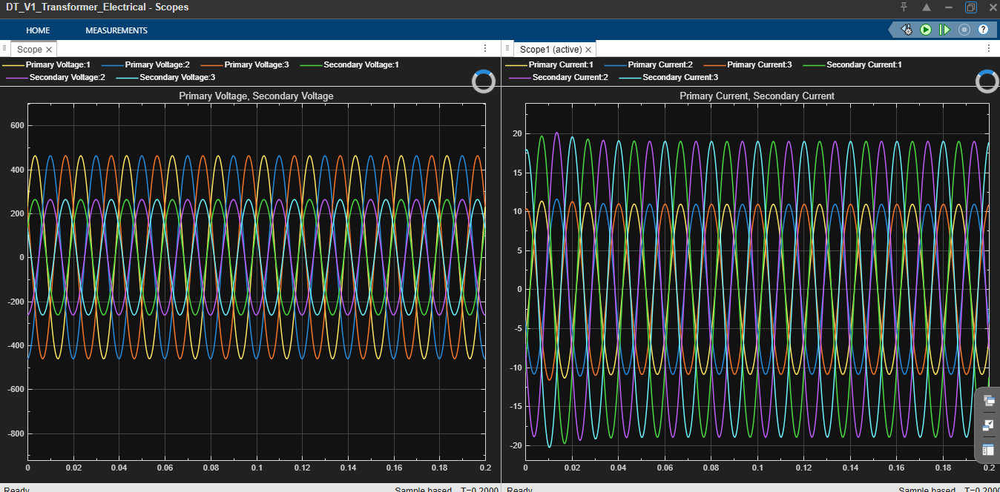

DIGITAL TWIN · POWER SYSTEMS
Distribution Transformer
Digital Twin
A simulation-driven monitoring concept for distribution transformers, combining electrical modelling, load-state experiments and a path toward condition monitoring.
MATLABSimulinkSimscape ElectricalDigital Twin
Open case study ↘

MODEL / 3-PHASE